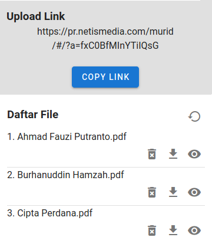

Untuk bisa menggunakan aplikasi ini sebagai guru, anda perlu memiliki token yang bisa diperoleh pada saat melakukan registrasi di halaman web ini.
Setelah anda berhasil mendaftar, aplikasi akan memberi informasi seperti pada gambar berikut.
Setelah mendapatkan token, anda perlu menjaga kerahasiaan token tersebut. Token tersebut akan anda pakai selama anda menggunakan aplikasi web ini.
Tahap selanjutnya anda perlu melakukan login dengan mengisi nama anda dan token yang telah anda terima di kotak isian seperti pada gambar berikut.
Setelah login berhasil, anda akan dibawa ke halaman daftar tugas belajar.
Karena baru pertama kali menggunakan aplikasi ini, daftar tersebut masih kosong. Untuk menambahkan data tugas belajar yang baru, klik tombol yang ada di pojok kanan bawah layar. Selanjutnya aplikasi akan menampilkan form isian seperti pada gambar berikut.
Isi kolom yang bersesuaian dan akhiri dengan menekan tombol
Save.
Selanjutnya anda akan dibawa kembali ke halaman daftar tugas belajar.
Fungsi beberapa tombol dalam gambar di atas adalah sebagai berikut.
| tambah tugas baru. | |
| hapus tugas. | |
| edit tugas. | |
| keluar dari aplikasi. |
Untuk mendapatkan link upload yang akan digunakan oleh siswa, klik nama tugas belajar yang ada dalam daftar. Selanjutnya aplikasi akan menampilkan halaman seperti pada gambar berikut.
Dengan meng-klik tombol COPY LINK, link upload untuk
tugas ini akan disimpan di clipboard, dan bisa anda paste di
aplikasi yang lain seperti WhatsApp, Twitter, Facebook atau email untuk
anda share dengan semua siswa anda.
Daftar file PDF (berisi foto yang diunggah oleh siswa) dapat anda lihat di bagian bawah halaman ini. Tekan tombol untuk memperbaharui daftar file yang telah diunggah siswa.

Fungsi beberapa tombol dalam gambar di atas adalah sebagai berikut.
| perbaharui daftar file yang diunggah siswa. | |
| hapus file. | |
| download file. | |
| lihat file. |
Setelah anda mendapatkan link upload, buka link tersebut dengan menggunakan web browser. Web browser yang dianjurkan adalah sebagai berikut.
Pertama kali menggunakan aplikasi ini, anda akan diminta memasukkan data nama. Nomor PIN bersifat opsional (tidak harus diisi). Apabila guru memberikan nomor PIN tersebut ke anda, anda harus memasukkannya dalam tahap ini.
Setelah memasukkan data identitas, aplikasi akan menampilkan halaman seperti terlihat pada gambar berikut.
Fungsi beberapa tombol dalam gambar di atas adalah sebagai berikut.
Catatan: Anda bisa menekan tombol beberapa kali untuk menambahkan foto atau file foto yang lainnya. Jumlah foto yang telah anda tambahkan bisa dilihat pada bagian yang tampilannya seperti ini .
Jika semua foto sudah anda pilih, selanjutnya tekan tombol
KIRIM untuk meng-upload foto-foto tersebut ke server.
Apabila berhasil, aplikasi ini akan menampilkan halaman informasi seperti
gambar di bawah ini.
Untuk memeriksa dan melihat salinan dari apa yang telah anda upload,
klik tombol LIHAT SALINAN. Tergantung dari Sistem Operasi
dari perangkat yang anda gunakan (Android, iOS, Windows, dll), mengklik
tombol tersebut bisa langsung menampilkan apa yang baru saja anda upload,
tapi bisa juga cuma mendownload salinan tersebut tanpa
menampilkannya.